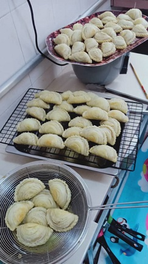
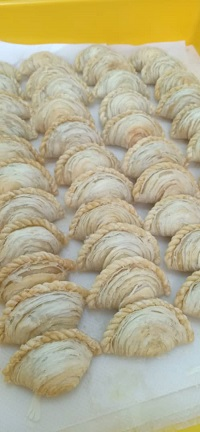
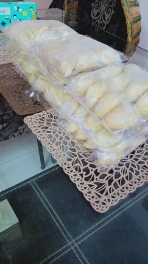
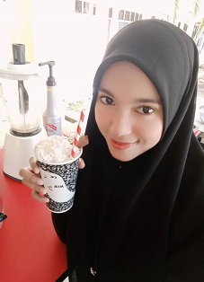
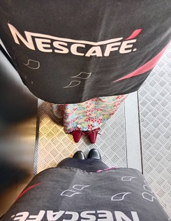

|
|
|
|
|
| Experince | The Story | ||
| 

First Work Experience |
I started making karipap pusing when I was 17 years old.
My family and I worked on making karipap pusing and sold them at small shops. Then, we produce frozen curry puffs for ordered sales only. Until now, I still make karipap pusing when I return home for a holiday. The production is quite difficult, as we need to prepare the filling for the curry puff, make a different dough for the spiral curry puff, and also roll it out. It takes a long time if done alone or with just one other person. One batch of curry puff dough can produce 70 curry puffs if none are damaged. |
||
| 

Second Work Experience |
This is also an interesting experience for me in preparing
flavored drinks. Here, I learned to arrive at work on time, wear a uniform, follow a systematic work method, and even make new friends. Working here has taught me to balance work time with study time simultaneously. Also teaches me to always be careful while going to and returning from work. Besides preparing water, I also learned to calculate the remaining stock and also learned to count the cash capital. |
||